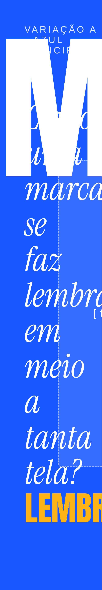
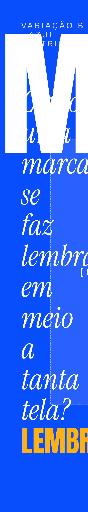
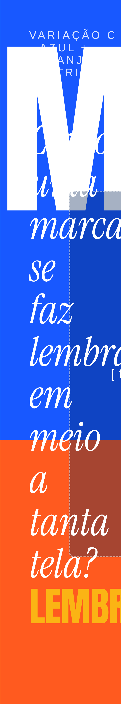

Três variações da primeira cena (0 a 4 segundos), com a mesma composição e cores diferentes. A pessoa ainda é um espaço tracejado; a fonte também é provisória.



Próximo passo: escolher a variação do gancho. Depois, os mesmos testes valem para as cenas de impacto.